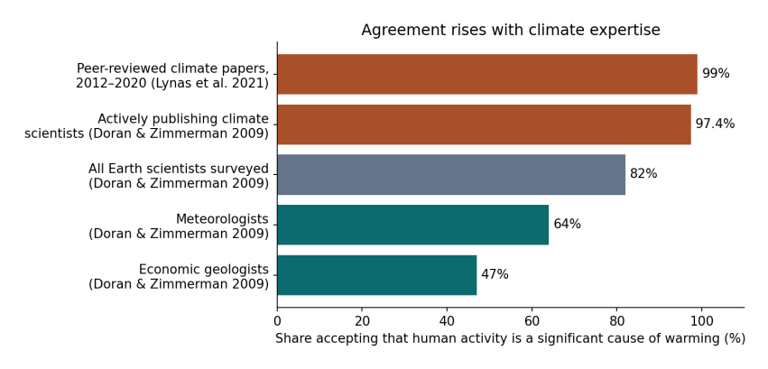

2. Who agrees, and about what¶
Before we look at any temperatures, it helps to be clear about what the scientific consensus on climate change actually says, and how it has been measured.
The consensus is that the Earth is warming and that human activity, chiefly burning coal, oil and gas, is the main cause. It has been measured in two ways. The first way is to read the scientific literature. In 2021, Mark Lynas and colleagues (Lynas et al. 2021) took a random sample of 3,000 papers from the 88,125 climate-related studies published between 2012 and 2020, read their abstracts, and found that more than 99% of those taking a position accepted that humans are causing the warming. The second way is to ask the scientists directly. In 2009, Peter Doran and Maggie Kendall Zimmerman surveyed (Doran and Zimmerman 2009) more than 3,000 Earth scientists, and their results are especially useful here because they broke the answers down by field.

Figure 2.1. Share of scientists, or of scientific papers, accepting that human activity is a significant cause of warming, by group. Sources: Lynas et al. (2021) for papers; Doran and Zimmerman (2009) for the four survey groups.
How to read Figure 2.1. Each bar is one group. The length of the bar, read against the scale along the bottom, is the percentage in that group who agree that human activity is a significant cause of warming. The top two bars, in orange, are the people and papers closest to the subject: the climate literature itself, and scientists who actively publish research on climate. Agreement there is 97% to 99%. The grey bar is all the Earth scientists in the 2009 survey taken together, including geologists, geophysicists and others who do not study climate: 82%. The two teal bars at the bottom are the groups with the lowest agreement. Meteorologists, at 64%, are mostly weather forecasters: they are expert at predicting the atmosphere a few days ahead, which is a different problem from understanding how the climate changes over decades. Economic geologists, at 47%, are the geologists who find and assess deposits of oil, gas, coal and minerals; many of them worked in those industries.
The pattern is the point. Agreement rises steadily with expertise in climate itself, and it is lowest in the fields that are furthest from climate research or closest to fossil-fuel extraction. A separate study by William Anderegg and colleagues (Anderegg et al. 2010) in 2010 looked at 1,372 climate researchers and found the same thing from another direction: the small minority unconvinced by human-caused warming had, on average, far fewer publications on climate and far fewer citations than the majority.
None of this means that someone from another field cannot ask a good question about climate. Economists, statisticians and engineers have contributed a great deal to climate science. But it does mean that when a surprising result comes from outside the field, the first thing to check is whether it has taken account of what the field already knows.
2.1 What about capitalism?¶
The scientific consensus is about humans and fossil fuels. No survey has asked climate scientists whether capitalism caused climate change, and I will not pretend that one has. But the question of who burned the fuel, and why, is not hidden either. In 2014 the researcher Richard Heede (Heede 2014) traced the carbon dioxide and methane emitted by industry between 1751 and 2010 back to the companies and state producers that extracted the coal, oil and gas. He found that 90 entities, most of them still operating, accounted for about 63% of the total. The historian Andreas Malm has argued, in Fossil Capital (Malm 2016), that steam engines spread through British cotton mills in the early nineteenth century not because coal was cheaper than water power, which it often was not, but because steam let mill owners build where workers were plentiful and run the machines on their own schedule. Whether one accepts Malm’s argument or not, the history of fossil fuels is a history of particular decisions by particular owners, made for profit. The thermometer tells us that the world is warming. The ledger tells us who gained from warming it.
References¶
Anderegg, William R. L., James W. Prall, Jacob Harold, and Stephen H. Schneider. 2010. “Expert Credibility in Climate Change.” Proceedings of the National Academy of Sciences 107 (27): 12107–9. https://doi.org/10.1073/pnas.1003187107.
Doran, Peter T., and Maggie Kendall Zimmerman. 2009. “Examining the Scientific Consensus on Climate Change.” Eos, Transactions American Geophysical Union 90 (3): 22–23. https://doi.org/10.1029/2009EO030002.
Heede, Richard. 2014. “Tracing Anthropogenic Carbon Dioxide and Methane Emissions to Fossil Fuel and Cement Producers, 1854–2010.” Climatic Change 122: 229–41. https://doi.org/10.1007/s10584-013-0986-y.
Lynas, Mark, Benjamin Z. Houlton, and Simon Perry. 2021. “Greater than 99% Consensus on Human Caused Climate Change in the Peer-Reviewed Scientific Literature.” Environmental Research Letters 16 (11): 114005. https://doi.org/10.1088/1748-9326/ac2966.
Malm, Andreas. 2016. Fossil Capital: The Rise of Steam Power and the Roots of Global Warming. Verso.